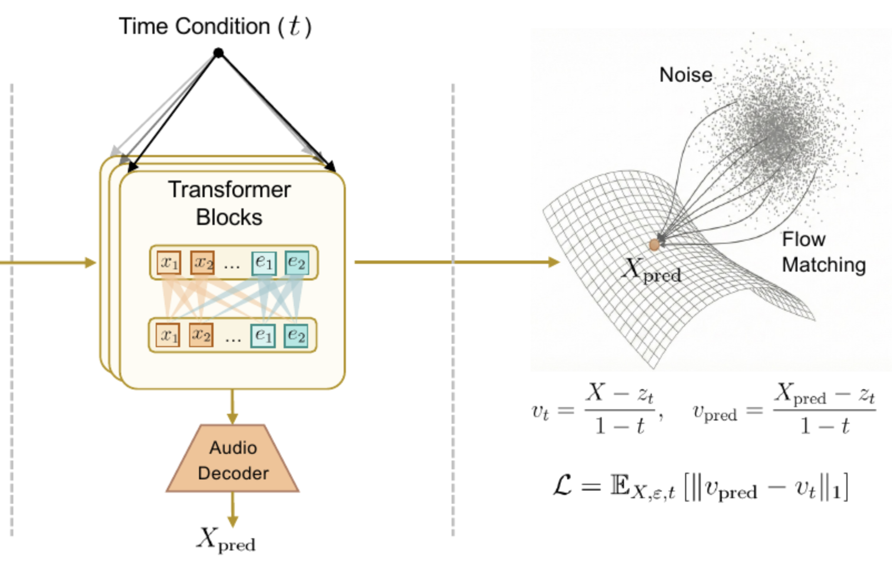

Model architectureWenhao Gao
I am a senior undergraduate student at Tongji University. I spent a wonderful year as a Research Intern at Stony Brook University, working with Prof. Chenyu You. I'm truly grateful for the experience and the amazing people I had the opportunity to work with.
I am currently seeking PhD opportunities and would welcome the chance to discuss potential research collaborations.
Research Interests
My research interests broadly lie in computer vision and machine learning, with a particular focus on multimodal learning, world models, and embodied intelligence.
I aim to develop intelligent agents that can perceive and reason about dynamic environments, understand human intentions, and interact naturally with people and the physical world.
News
Our paper NeuroSonic was accepted to MICCAI 2026!
I joined Prof. Chenyu You’s group at Stony Brook University as a Research Intern.
The national-level undergraduate innovation project I led passed its final defense.
I received the University-Level First-Class Scholarship.